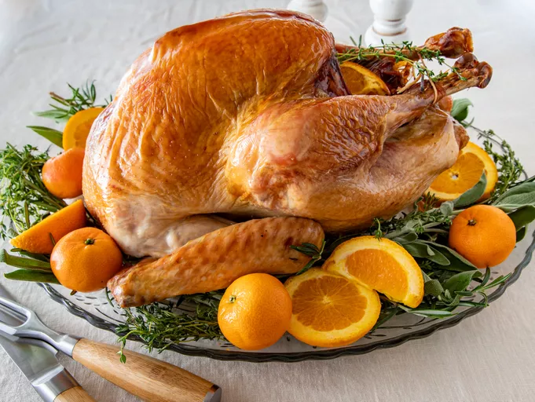

Home
Juicy Thanksgiving Turkey

About the Recipe
This juicy Thanksgiving turkey recipe uses orange wedges and aromatics to add flavor, while a champagne broth works its magic to keep the turkey moist and tender. My grandmother and mother passed this recipe on to me. It changes a little every Thanksgiving, because I’ve never written the recipe down before. But the roast turkey is always incredibly juicy and succulent.
Ingredients
- 2 tablespoons dried parsley
- 2 tablespoons ground dried rosemary
- 2 tablespoons rubbed dried sage
- 2 tablespoons dried thyme leaves
- 1 tablespoon lemon-pepper seasoning
- 1 tablespoon salt
- 1 (15 pound) whole turkey, neck and giblets removed
- 1 medium orange, cut into 8 wedges
- 1 medium onion, chopped into large pieces
- 1 medium carrot, cut into ½-inch slices
- 2 stalks celery, cut into ½-inch slices
- 1 (750 milliliter) bottle Champagne or dry sparkling wine
- 1 (14.5 ounce) can chicken broth
Steps
- Preheat the oven to 350 degrees F (175 degrees C). Line a deep roasting pan with enough heavy-duty aluminum foil to wrap loosely around the turkey.
- Stir parsley, rosemary, sage, thyme, lemon-pepper seasoning, and salt together in a small bowl.
- Pat turkey dry with paper towels. Rub most of the herb mixture inside the cavity and sprinkle the remaining mixture over the outside. Loosely fill the cavity with orange wedges, onion, carrot, and celery. Tie the legs together with kitchen twine and tuck the wings behind the body.
- Place turkey breast-side up on the foil in the roasting pan. Pour Champagne and chicken broth into the pan around the turkey, pouring a little into the cavity.
- Bring the foil up and loosely seal it around the turkey, leaving space between the foil and the skin.
- Roast in the preheated oven for 2 ½ to 3 hours. Carefully open and fold back the foil, then continue roasting until the skin is golden brown and the turkey reaches at least 165 degrees F (74 degrees C) in the thickest part of the breast, innermost part of the thigh, and innermost part of the wing, 30 to 60 minutes more.
- Remove turkey from the oven and loosely tent with two sheets of aluminum foil. Let rest for at least 20 minutes before carving.